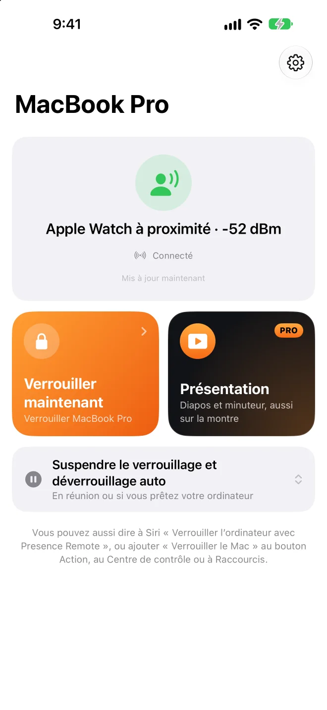

Partez, il se verrouille.Revenez, il s’ouvre.
Un utilitaire dans la barre des menus du Mac qui capte le signal Bluetooth de votre iPhone ou de votre Apple Watch.Rien à installer sur votre téléphone ni sur votre montre.
L’app Mac est gratuite et open source. Nécessite macOS 26 ou version ultérieure.
et il se déverrouille Allez jusque-là
et il se verrouille
Apple Watch à proximité−52 dBm
Faites glisser Vous vers la droite, puis revenez.
Mieux vaut déverrouiller un peu tard que verrouiller à tort.
- Vous tapez encore ? Il attend
- Verrouillé
- L’Apple Watch d’abord
- Confirmation sur l’iPhone
- Puis le mot de passe
Il verrouille quand il le faut. Et vous laisse tranquille le reste du temps.
Pas de verrouillage en présentation
Pendant un diaporama Keynote ou PowerPoint.
Plus souple à la maison
Réseau de confiance, sur secteur ou horaires choisis.
Suspendre un moment
15 min à 4 h ; verrouille à la fin si vous êtes parti.
Alerte en cas de déverrouillage
Historique, photo et notification sur votre iPhone.
Temps passé assis aujourd’hui
Vous invite à vous lever après une longue période.
Vous venez de BLEUnlock
Importez appareils et seuils en un clic.


Sur scène, votre téléphone sert de télécommande.
Pas de télécommande à acheter.
Choisissez un outil, puis maintenez et glissez dans la zone tactile.
Même écran verrouillé
Boutons sur l’écran verrouillé et la Dynamic Island.
Sur Apple Watch aussi
Toucher, tourner la couronne ou toucher deux fois.
Minuteur de présentation
Tapotement au poignet à 5 min et à la fin.
Volume du Mac
Aucune icône de volume sur l’écran projeté.
Votre téléphone sert aussi de trackpad et de clavier pour votre Mac.
Tapez avec le clavier de votre téléphone.
- Déplacer
- Clic gauche
- Clic droit
- Défiler
- Glisser
- Changer
Faites glisser ou touchez la zone tactile, ou tapez dans le champ de texte.
Le verrouillage est gratuit. La télécommande et le trackpad font partie de Pro.
App Mac
Open source · Mises à jour auto
- Verrouille au départ, déverrouille au retour
- Reste déverrouillé en présentation ou à la maison
- Historique et temps au bureau
Presence Remote
iPhone · Apple Watch
- Verrouillage et pause en un toucher
- Notifications de verrouillage et déverrouillage
- Confirmation chiffrée avant déverrouillage
Presence Pro
- Télécommande de présentationiPhone · Apple Watch
- Trackpad et clavieriPhone
Essai gratuit de 7 jours sur les abonnements · Partage familial
Passer à Pro dans l’appVotre Mac n’écoute que votre téléphone.
- Pas de compte, pas de serveur
- Chaque commande est chiffrée
- Mot de passe dans votre trousseau
- Open source
Questions
Faut-il installer une app sur mon téléphone ?
Non, l’app Mac suffit pour verrouiller et déverrouiller. Presence Remote ajoute le verrouillage à distance, les notifications et la confirmation avant déverrouillage ; Presence Pro ajoute la télécommande de présentation ainsi que Trackpad et clavier.
De quoi ai-je besoin ?
Mac : macOS 26 ou version ultérieure. Presence Remote : iOS 26 ou watchOS 26 ou version ultérieure. Vous pouvez aussi utiliser uniquement une Apple Watch ou un autre appareil Bluetooth à adresse fixe.
Quelle différence avec le déverrouillage du Mac par l’Apple Watch ?
La fonction intégrée ne fait que déverrouiller, sans verrouiller. Presence fait les deux et laisse d’abord votre montre déverrouiller le Mac. Les deux fonctionnent ensemble.
Risque-t-il de se verrouiller alors que je ne bouge pas ?
Le signal doit rester faible plusieurs secondes, et le verrouillage attend tant que vous tapez. Si c’est trop sensible, recalibrez dans la page « Appareils ».
Pourquoi l’app Mac n’est-elle pas sur le Mac App Store ?
Le déverrouillage automatique saisit votre mot de passe, ce qui est interdit sur le Mac App Store. L’app Mac est notarisée par Apple et se met à jour automatiquement.
Quelles apps de présentation sont compatibles ?
Changer de diapo envoie les touches fléchées, comprises par toutes les apps de présentation ; le laser et le projecteur sont dessinés par-dessus l’écran. Activez d’abord « Autoriser la télécommande de présentation » dans Presence sur votre Mac.
Comment activer Trackpad et clavier ?
Dans Presence sur votre Mac, activez « iPhone et montre › Autoriser le contrôle par iPhone » (désactivé par défaut). Votre Mac ignore toute action lorsqu’il est verrouillé, et rien de ce que vous tapez n’est enregistré.
Est-ce que ça consomme beaucoup de batterie ?
Les signaux sont émis de toute façon ; Presence ne fait qu’écouter sur le Mac. L’utilisation processeur du Mac reste normalement sous 1 %.